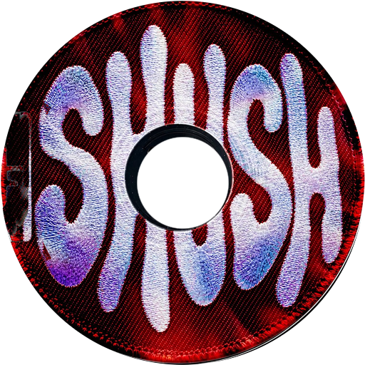

A password manager and 2FA authenticator for Windows that keeps everything in one encrypted file on your own disk.
turn the sound on for the full pressing
Quick search opens over any app. Pick a login, press a key, paste.
# Windows 10/11 · Rust stable · Node 22
git clone https://github.com/kash-talel/shush
cd shush; npm ci --prefix src
npx --prefix src tauri dev